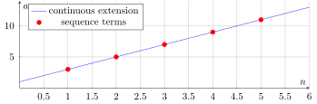
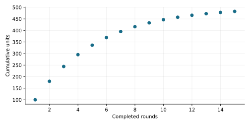

Sequences, Series, and Mathematical Patterns
Opening context: repeated change in health sciences
A clinic purchases replacement sensors every month, a laboratory grows a cell culture in repeated generations, and a public-health program tracks vaccinations week by week. Each process generates a sequence: an ordered list whose position matters. Adding observations produces a series. The central questions are: What pattern describes the observations? How can we predict a later term? What does the total represent? When is extrapolation defensible?
Learning outcomes
By the end of the chapter, students should be able to (1) interpret sequences as functions on integer domains; (2) distinguish explicit and recursive descriptions; (3) derive arithmetic and geometric formulas; (4) evaluate finite sums with sigma notation; (5) use geometric sums and discuss convergence; (6) analyze compound-growth and repeated-dose models; (7) distinguish exact patterns from empirical approximations; (8) explore recurrence and sums in R and Python; and (9) connect difference quotients and discrete accumulation to calculus.
Prerequisite connections
Chapter 4 introduced functions and multiple representations; Chapter 7 developed exponential models. In this chapter the input is usually an integer index, and the outputs form a discrete pattern. Unless stated otherwise, the first term has index \(n=1\). In computer code we label indices explicitly to avoid the common zero-indexing mismatch.
Working with R and Python
Every laboratory includes a prediction, a full-width R code listing, a full-width Python code listing, and interpretation questions. Execute the two programs independently; compare their results with hand calculations.
Sequences as functions on integer domains
A sequence \(\{a_n\}_{n=1}^{\infty}\) is a function whose domain is the positive integers. Its values \(a_1,a_2,\ldots\) are called terms. The order is essential: \(2,4,8,16\) is not the same sequence as \(16,8,4,2\). A finite sequence has a final index; an infinite sequence is defined for every positive integer, even though we cannot list all terms.
Example 1. For \(a_n=3n-1\), the first four terms are \(2,5,8,11\). The term \(a_{20}=59\) is found by substitution; it is not necessary to write all previous terms.
Guided practice 1. Evaluate \(a_1,a_2,a_5,a_{12}\) for \(a_n=n^2-2n\). Identify whether the first four terms are increasing.
Visual investigation 1: discrete versus continuous.
Plot \(a_n=2n+1\) at \(n=1,2,3,4,5\). Then draw the line \(y=2x+1\) on the same axes. The dots belong to the sequence; the continuous line is an extension. Explain why a value at \(x=2.5\) is not a term of the original sequence.

Explicit formulas, tables, and recursion
An explicit formula computes \(a_n\) directly from \(n\). A recurrence defines later terms using earlier terms and requires an initial condition. For example \(a_1=4\) and \(a_{n+1}=a_n+3\) generates \(4,7,10,13,\ldots\). A recurrence without an initial condition does not specify a unique sequence. Tables and graphs help identify patterns, but a few observations never prove a rule for all indices.
Example 2. Given \(a_1=2\) and \(a_{n+1}=2a_n+1\), successive terms are \(2,5,11,23\). Solving \(a_{n+1}+1=2(a_n+1)\) suggests \(a_n+1=3\cdot2^{n-1}\), hence \(a_n=3\cdot2^{n-1}-1\). Verify the initial condition and recurrence.
Guided practice 2. Generate five terms from \(b_1=10\), \(b_{n+1}=0.8b_n\). Explain the meaning of multiplying by \(0.8\) each step.
Arithmetic sequences: constant differences
A sequence is arithmetic when \(a_{n+1}-a_n=d\) is constant. Starting at \(a_1\), we add \(d\) once to obtain \(a_2\), twice to obtain \(a_3\), and \(n-1\) times to obtain \(a_n\). Thus \[\boxed{a_n=a_1+(n-1)d}.\] A negative \(d\) gives a decreasing sequence, and \(d=0\) gives a constant sequence. Arithmetic change is the discrete counterpart of a linear function: every unit increase in the index changes the output by the same amount.
Example 3. A laboratory has \(240\) test strips at the start of week 1 and uses \(18\) strips each week. The inventory at the start of week \(n\) is \(a_n=240-18(n-1)\), as long as no new stock arrives. At the start of week 8, \(a_8=114\). The mathematical formula becomes physically invalid after the stock is exhausted.
Guided practice 3. An arithmetic sequence has \(a_4=17\) and \(a_{10}=41\). Subtract the two equations to determine \(d\); then find \(a_1\) and \(a_{25}\).
Visual investigation 2: first differences.
Create a table of \(n\), \(a_n\), and \(a_{n+1}-a_n\) for \(a_n=12-2n\). Explain how the constant differences appear as a fixed vertical step between consecutive plotted points.
Arithmetic series: accumulating a constant difference
A series adds terms of a sequence. Write \(S_n=a_1+a_2+\cdots+a_n\). For an arithmetic sequence, pairing the first and last terms gives \(a_1+a_n\); the second and next-to-last also add to \(a_1+a_n\). Counting \(n\) terms and dividing by two yields \[\boxed{S_n=\frac n2(a_1+a_n)=\frac n2\bigl(2a_1+(n-1)d\bigr)}.\] This formula works for odd and even \(n\); the pairing argument can be formalized by writing the sum forwards and backwards and adding the two equations.
Example 4. A community program enrolls 15 new participants in its first week and increases weekly enrollment by 4. In 12 weeks the weekly enrollment is \(15+11(4)=59\), so total enrollment is \(S_{12}=12(15+59)/2=444\) participants, assuming no person enrolls twice.
Guided practice 4. Calculate \(5+9+13+\cdots+65\) by first finding the number of terms. Verify your result by pairing terms.
Geometric sequences: constant ratios
A geometric sequence satisfies \(a_{n+1}/a_n=r\) when \(a_n\ne0\). Equivalently \(a_{n+1}=ra_n\), which also defines the all-zero case. Repeated multiplication gives \[\boxed{a_n=a_1r^{n-1}}.\] When \(r>1\) and \(a_1>0\), the sequence grows; when \(0<r<1\), it decays; when \(r<0\), signs alternate. The case \(r=1\) is constant. For a negative ratio, do not infer growth or decay from the sign alone: examine \(|r|\).
Example 5. A simulated culture begins with 500 cells and doubles each generation. Generation \(n\) has \(a_n=500\cdot2^{n-1}\). At generation 6, the model predicts 16,000 cells. Real cultures cannot double indefinitely because nutrients and space are finite.
Guided practice 5. A concentration is multiplied by \(0.75\) each hour, starting at \(80\) units. Write an explicit formula and compute the value after four full hours. Carefully state whether the starting time is indexed by \(n=0\) or \(n=1\).
Visual investigation 3: ratios versus differences.
Compare \(a_n=4+3(n-1)\) with \(b_n=4(1.5)^{n-1}\) for \(n=1,\ldots,8\). Calculate consecutive differences and ratios. Which measure is constant for each model? When do the geometric values overtake the arithmetic values?
Finite geometric series and their derivation
For \(S_n=a_1+a_1r+\cdots+a_1r^{n-1}\), multiply by \(r\) and subtract: \[S_n-rS_n=a_1-a_1r^n.\] Therefore, for \(r\ne1\), \[\boxed{S_n=a_1\frac{1-r^n}{1-r}}.\] For \(r=1\), all terms equal \(a_1\) and \(S_n=na_1\). The finite-sum formula is valid for negative ratios and ratios larger than one; the infinite-sum formula discussed later needs additional conditions.
Example 6. A scholarship fund distributes \(1000\) in year 1 and 90% of the previous year’s distribution in each of the next four years. The five-year total is \(1000(1-0.9^5)/(1-0.9)=\$4095.10\).
Guided practice 6. Find \(3+6+12+24+48+96\) using both direct addition and the geometric formula. What changes if the ratio equals one?
Sigma notation and index transformations
Sigma notation \(\sum_{k=m}^{n}f(k)\) means evaluate \(f(k)\) at each integer from \(m\) through \(n\) and add the results. The letter \(k\) is a dummy index; replacing it consistently with \(j\) does not change the sum. Useful properties are \[\sum_{k=1}^n(cu_k+dv_k)=c\sum_{k=1}^n u_k+d\sum_{k=1}^n v_k,\quad \sum_{k=1}^n1=n.\] In particular \(\sum_{k=1}^n k=n(n+1)/2\). Changing the starting index requires changing the summand: \(\sum_{k=0}^{4}2^k=\sum_{j=1}^{5}2^{j-1}\).
Example 7. Evaluate \(\sum_{k=1}^{5}(2k+1)=2(1+2+3+4+5)+5=35\). Checking by listing the terms \(3+5+7+9+11\) gives the same result.
Guided practice 7. Rewrite \(7+10+13+16+19\) using sigma notation in two different ways, one beginning at index 0 and one at index 1.
Mathematical induction: proving a pattern
Observing a pattern in the first ten terms is not a proof that it holds for every positive integer. Mathematical induction has two parts. First verify the base case. Next assume a statement \(P(n)\) is true and use that assumption to prove \(P(n+1)\). The conclusion then holds for every integer from the starting index onward.
Example 8. Prove \(1+2+\cdots+n=n(n+1)/2\). Base case \(n=1\): both sides equal 1. Assume \(\sum_{k=1}^n k=n(n+1)/2\). Then \(\sum_{k=1}^{n+1}k=n(n+1)/2+(n+1)=(n+1)(n+2)/2\), which is the desired formula at \(n+1\).
Guided practice 8. Prove \(\sum_{k=1}^n(2k-1)=n^2\) by induction. Identify exactly where the induction hypothesis is used.
Infinite geometric series and convergence
An infinite series is defined by the limit of its partial sums, not by performing infinitely many additions at once. If \(|r|<1\), then \(r^n\to0\), so \[\boxed{\sum_{k=0}^{\infty}ar^k=\frac{a}{1-r}\qquad(|r|<1)}.\] If \(|r|\ge1\) and \(a\ne0\), the terms do not tend to zero and the geometric series does not converge. The special all-zero series converges trivially. Convergence is about partial sums approaching a finite value, not merely individual terms becoming small.
Example 9. A patient receives an idealized sequence of doses contributing \(8,4,2,1,\ldots\) units to a cumulative total. The theoretical sum is \(8/(1-1/2)=16\) units. This is a sum of contributions, not automatically a model for the amount of medication present in the body at one time.
Guided practice 9. Determine whether \(\sum_{k=0}^{\infty}5(-0.4)^k\) converges and compute its sum. Explain why alternating signs do not prevent convergence in this example.
Visual investigation 4: partial sums.
Draw \(S_n\) for \(a=10\) and \(r=0.6\), with \(n=1,\ldots,12\). Add the horizontal line \(S=25\). Why does the graph approach but never exceed 25? What changes for \(r=-0.6\)?
Recursive models with constant input
Many processes combine retention and repeated input: \(a_{n+1}=ra_n+b\). For \(r\ne1\), an equilibrium \(L\) satisfies \(L=rL+b\), hence \(L=b/(1-r)\). Subtracting the equilibrium gives \(a_{n+1}-L=r(a_n-L)\) and therefore \[\boxed{a_n=L+(a_1-L)r^{n-1}}.\] If \(|r|<1\), the sequence approaches \(L\). If \(r=1\), the recurrence is arithmetic: \(a_n=a_1+(n-1)b\). If \(|r|>1\), deviations from equilibrium generally grow rather than shrink.
Example 10. A simulated medication model retains 70% of the previous amount each day and adds 12 mg at the next daily measurement: \(a_{n+1}=0.7a_n+12\), with \(a_1=12\) mg. The equilibrium is \(L=12/0.3=40\) mg, so \(a_n=40-28(0.7)^{n-1}\). This is a simplified discrete model, not a clinical dosing recommendation.
Guided practice 10. Solve \(a_{n+1}=0.8a_n+5\), \(a_1=5\). Find its equilibrium and its sixth term.
Compounding, annuities, and financial interpretation
With interest rate \(i\) per compounding period and initial balance \(P\), a single deposit grows to \(P(1+i)^n\) after \(n\) periods. If a fixed deposit \(D\) is made at the end of each period, its future value after \(n\) deposits is \[F_n=D\bigl[1+(1+i)+\cdots+(1+i)^{n-1}\bigr]=D\frac{(1+i)^n-1}{i},\quad i\ne0.\] For \(i=0\), \(F_n=nD\). Timing matters: beginning-of-period deposits earn one additional period of interest. Fees, taxes, and varying rates are not included in this idealized formula.
Example 11. A student deposits \(50\) at the end of each month for 12 months at a hypothetical monthly rate of \(0.005\). The future value is \(50((1.005)^{12}-1)/0.005\approx\$616.78\). Total deposits are \(\$600\); the difference represents modeled interest.
Guided practice 11. Derive the future value for deposits of \(25\) at the beginning of each month for six months, with monthly interest rate \(0.01\).
Difference tables and finite differences
For a sequence \(a_n\), its first differences are \(\Delta a_n=a_{n+1}-a_n\); second differences are \(\Delta^2a_n=\Delta a_{n+1}-\Delta a_n\). A linear formula has constant first differences, and a quadratic formula \(a_n=An^2+Bn+C\) has constant second differences equal to \(2A\) when indices increase by one. These patterns are useful for recognizing candidate formulas, but finite data alone cannot guarantee that a model continues indefinitely.
Example 12. For \(a_n=n^2+2n\), the first five terms are \(3,8,15,24,35\). First differences are \(5,7,9,11\); second differences are \(2,2,2\). This is consistent with a quadratic whose leading coefficient is \(1\).
Guided practice 12. The observed values are \(4,9,16,25,36\). Construct a difference table and propose an explicit formula. Give one reason the next value is not logically forced by only five observations.
Patterns in real data: modeling and limitations
Observed sequences contain noise, missed measurements, changing conditions, and possible structural breaks. Arithmetic and geometric patterns are models, not laws. Compare predictions to data, examine residuals \(e_n=y_n-\hat y_n\), and state the measurement interval. A ratio of 1.1 per week differs from a ratio of 1.1 per month. Predictions far beyond the observed indices are extrapolations and should be interpreted cautiously.
Example 13. Weekly test demand is \(100,108,117,126\) units. Ratios are approximately \(1.080,1.083,1.077\); an 8% geometric growth model is plausible as a short-term approximation, not an exact identity. Predict week 5 as \(100(1.08)^4\approx136\) and compare with later observations when available.
Guided practice 13. A clinic records \(40,44,48,53,57\) visits over five weeks. Compare arithmetic and geometric descriptions. Which model has the clearer interpretation for this short series? What additional evidence would you seek?
From discrete change to calculus
The average change between successive terms is \(\Delta a_n=a_{n+1}-a_n\). For \(a_n=f(nh)\) with time step \(h\), the rate per unit time is \([f((n+1)h)-f(nh)]/h\). When \(h\) becomes very small, calculus studies the limit of this quotient. Likewise, a sum of rectangular contributions \(\sum f(t_k)\Delta t\) anticipates a definite integral. Sequences and finite sums therefore connect the discrete and continuous viewpoints.
Example 14. For \(f(t)=t^2\), the forward difference quotient is \([(t+h)^2-t^2]/h=2t+h\). As \(h\to0\), this approaches \(2t\), the derivative of \(t^2\). At a fixed time step \(h=1\), the difference quotient is \(2t+1\) rather than \(2t\).
Guided practice 14. Compute the forward difference quotient for \(f(t)=3t^2-2t\) and identify its limiting expression as \(h\to0\).
Visual investigation 5: discrete accumulation.
For \(f(t)=t\) on \([0,4]\), calculate the left-endpoint sums using 4 and 8 equal rectangles. Compare each estimate with the triangle area \(8\). Explain why finer subdivisions improve the approximation.
Deeper investigation: geometric patterns and the doubling-time question
A common scientific question asks how many time steps are required for an initially positive quantity to reach a target. If \(a_n=a_1r^{n-1}\) with \(r>1\), then \(a_n\ge T\) is equivalent to \(r^{n-1}\ge T/a_1\). Because \(\ln r>0\), taking natural logarithms preserves the inequality: \[n\ge 1+\frac{\ln(T/a_1)}{\ln r}.\] The smallest feasible integer index is the ceiling of the right-hand side, subject to \(n\ge1\). If \(0<r<1\), the logarithm of the ratio is negative and inequality directions must be handled with care. A doubling time measured in steps is \(\ln2/\ln r\) for \(r>1\); it need not be an integer, so observed doubling at discrete measurements may occur only after rounding to a later index.
Example 15. A simulated population starts at 250 and grows by 12% each generation. To exceed 500, solve \(250(1.12)^{n-1}>500\). This requires \(n-1>\ln2/\ln1.12\approx6.12\), so the first qualifying term is \(n=8\). At \(n=7\) the threshold has not yet been crossed.
Guided practice 15. A culture starts with 600 units and grows by 7% per generation. Determine the first term that exceeds 1000. Explain why a fractional index is not a valid observation number.
Visual investigation 6: threshold crossing.
Plot \(600(1.07)^{n-1}\) for \(n=1,\ldots,15\), together with a horizontal line at 1000. Mark the first discrete term above the threshold. Compare this with the continuous exponential extension and interpret the difference.
Deeper investigation: what happens when the ratio is negative?
Negative ratios are mathematically important even when a direct physical interpretation is less obvious. Consider \(a_n=10(-0.5)^{n-1}\). The signs alternate, while the absolute values shrink: \(10,-5,2.5,-1.25,\ldots\). Its partial sums oscillate around the infinite-series value \(10/(1+0.5)=20/3\). Because \(|-0.5|<1\), the oscillations shrink and the series converges. By contrast, for \(r=-1\), the terms alternate between \(a\) and \(-a\) without approaching zero, so the partial sums oscillate without settling.
Example 16. For \(\sum_{k=0}^{\infty}12(-1/3)^k\), the infinite sum is \(12/(1+1/3)=9\). The first four partial sums are \(12,8,28/3,80/9\), alternately above and below 9. The finite geometric formula verifies each value.
Guided practice 16. Compute the first six partial sums for \(\sum_{k=0}^{\infty}8(-1/2)^k\). Identify which partial sums lie above the limit and which lie below.
Visual investigation 7: alternating partial sums.
Draw the partial sums as dots and the limiting sum as a horizontal line. Explain why the error changes sign at each new term and why its magnitude decreases geometrically.
Deeper investigation: comparing two competing models
Suppose a program’s weekly demand can be represented either by an arithmetic model \(A_n=100+8(n-1)\) or by a geometric model \(G_n=100(1.06)^{n-1}\). Both begin at 100, but their long-run behavior differs. The arithmetic model increases by exactly eight units each week; the geometric model increases by 6% of its current level. At week 2, the arithmetic prediction is 108 and the geometric prediction is 106. At week 10, the arithmetic prediction is 172, while the geometric prediction is approximately 169.1 At later indices, compounding eventually produces larger increments in the geometric model.
Example 17. To decide which model is more suitable, collect additional observations and calculate residuals \(e_n=y_n-\widehat y_n\) for both. Compare residual patterns and not only the final prediction. If the program has a strict capacity limit, neither model is credible indefinitely.
Guided practice 17. Evaluate both models at weeks 5, 15, and 25. Find the first week when the geometric model exceeds the arithmetic model. Explain how a capacity constraint would change your recommendation.
Visual investigation 8: a model crossover.
Plot both models on the same coordinate system. Annotate their shared starting value, their different short-term changes, and their eventual crossover. Discuss how a graph can reveal a pattern but cannot establish the correctness of an empirical model.
Additional guided-practice clinic: selecting the right formula
Problem A: a sum or a term? A health department receives 30 shipments in month 1 and two additional shipments each month. Find (i) shipments received in month 12 and (ii) total shipments over 12 months. Solution strategy: The first question asks for \(a_{12}=30+11(2)=52\); the second asks for \(S_{12}=12(30+52)/2=492\). The different units of interpretation help distinguish the two answers.
Problem B: an explicit formula or a recurrence? A system starts at 4 and triples the previous output, then subtracts 2. The recurrence is \(a_{n+1}=3a_n-2\), \(a_1=4\). The equilibrium is 1, so \(a_n=1+3(3^{n-1})\). Check that \(a_2=10\) and \(a_3=28\). Follow-up: Explain why simply writing \(4(3^{n-1})-2\) is incorrect.
Problem C: is the infinite sum allowed? Compare \(\sum_{k=0}^{\infty}4(0.9)^k\) and \(\sum_{k=0}^{\infty}4(1.1)^k\). The first converges to 40; the second diverges because the terms do not approach zero. Follow-up: Compute both finite ten-term sums and explain why finite sums always exist even when an infinite series diverges.
Problem D: what does the index mean? A medication amount is measured immediately after a dose at time 0 and then once per day. If the first amount is 20 mg and 65% remains each day, \(M_n=20(0.65)^n\) for \(n=0,1,2,\ldots\). Re-indexing the same data at \(n=1\) gives \(a_n=20(0.65)^{n-1}\). Follow-up: Explain why these formulas describe the same measurements but assign different index labels.
Problem E: interpreting a limiting total. A program spends \(500\) in its first phase and 80% as much in each subsequent phase. The modeled infinite total is \(500/(1-0.8)=\$2500\). Follow-up: Determine how many phases are needed to reach at least 95% of this total, and discuss whether infinitely many phases are realistic.
Computational laboratory A: arithmetic and geometric patterns
Prediction. An arithmetic and a geometric sequence both begin at 4. Which will be larger at term 10 if the arithmetic difference is 3 and the geometric ratio is 1.5? Predict before running either program.
R code
n <- 1:12
arithmetic <- 4 + 3*(n-1)
geometric <- 4 * 1.5^(n-1)
print(data.frame(n, arithmetic, geometric))
cat("First overtake:", n[which(geometric > arithmetic)[1]], "\n")
plot(n, arithmetic, pch=19, col="blue", ylim=range(c(arithmetic, geometric)), xlab="Term index", ylab="Term value", main="Arithmetic and geometric sequences")
points(n, geometric, pch=17, col="red")
legend("topleft", c("Arithmetic", "Geometric"), col=c("blue","red"), pch=c(19,17))Python code
import numpy as np
import matplotlib.pyplot as plt
n = np.arange(1, 13)
arithmetic = 4 + 3*(n-1)
geometric = 4 * 1.5**(n-1)
for k, x, y in zip(n, arithmetic, geometric):
print(f"n={k:2d} arithmetic={x:7.2f} geometric={y:9.2f}")
print("First overtake:", n[np.where(geometric > arithmetic)[0][0]])
plt.plot(n, arithmetic, "o", label="Arithmetic")
plt.plot(n, geometric, "^", label="Geometric")
plt.xlabel("Term index"); plt.ylabel("Term value"); plt.legend(); plt.tight_layout()
plt.savefig("labA_python.png", dpi=180); plt.close()Interpretation. Check term 1, term 2, and term 10 by hand. Use the graph to distinguish isolated terms from continuous models. Find the first index at which the geometric sequence exceeds the arithmetic sequence.
Computational laboratory B: partial sums and convergence
Prediction. For \(a=10\) and \(r=0.6\), the first partial sum is 10 and the infinite sum is 25. Predict whether the tenth partial sum is closer to 20 or 25.
R code
n <- 1:15
a <- 10; r <- 0.6
terms <- a*r^(n-1)
partial <- cumsum(terms)
formula <- a*(1-r^n)/(1-r)
print(data.frame(n, partial, formula, error=partial-formula))
plot(n, partial, type="b", pch=19, xlab="Number of terms", ylab="Partial sum", main="Convergent geometric series")
abline(h=a/(1-r), lty=2, col="red")Python code
import numpy as np
import matplotlib.pyplot as plt
n = np.arange(1, 16)
a, r = 10.0, 0.6
terms = a*r**(n-1)
partial = np.cumsum(terms)
formula = a*(1-r**n)/(1-r)
print("Largest discrepancy:", np.max(np.abs(partial-formula)))
for k, s in zip(n, partial): print(f"S_{k} = {s:.6f}")
plt.plot(n, partial, "o-"); plt.axhline(a/(1-r), linestyle="--", label="Infinite sum")
plt.xlabel("Number of terms"); plt.ylabel("Partial sum"); plt.legend(); plt.tight_layout()
plt.savefig("labB_python.png", dpi=180); plt.close()Interpretation. Compare direct cumulative sums with the formula. Explain why \(|r|<1\) is needed for the infinite sum. Change \(r\) to \(-0.6\) and describe oscillation around the limit.
Computational laboratory C: repeated input and model sensitivity
Prediction. Consider \(a_{n+1}=ra_n+12\), \(a_1=12\). Compare the equilibrium when \(r=0.7\) and when \(r=0.85\). Which system approaches a larger long-run amount, and which approaches its equilibrium more slowly?
R code
n <- 1:25
b <- 12
plot(NA, xlim=c(1,25), ylim=c(0,85), xlab="Measurement index", ylab="Modeled amount (mg)", main="Retention and repeated input")
for (r in c(0.7,0.85)) {
x <- numeric(length(n)); x[1] <- 12
for (k in 2:length(n)) x[k] <- r*x[k-1]+b
equilibrium <- b/(1-r)
exact <- equilibrium+(x[1]-equilibrium)*r^(n-1)
print(data.frame(n=n[1:6], modeled=x[1:6], explicit=exact[1:6]))
lines(n,x,type="b",pch=ifelse(r==0.7,19,17),col=ifelse(r==0.7,"blue","red"))
abline(h=equilibrium,lty=2,col=ifelse(r==0.7,"blue","red"))
}
legend("topleft",c("r=0.70","r=0.85"),col=c("blue","red"),pch=c(19,17))Python code
import numpy as np
import matplotlib.pyplot as plt
n = np.arange(1, 26)
b = 12.0
for r in (0.7, 0.85):
x = np.zeros(len(n)); x[0] = 12
for k in range(1, len(n)): x[k] = r*x[k-1]+b
equilibrium = b/(1-r)
explicit = equilibrium+(x[0]-equilibrium)*r**(n-1)
assert np.allclose(x, explicit)
print(f"r={r}, equilibrium={equilibrium:.2f}, first six={np.round(x[:6],2)}")
plt.plot(n, x, "o-", label=f"r={r}")
plt.axhline(equilibrium, linestyle="--", alpha=0.5)
plt.xlabel("Measurement index"); plt.ylabel("Modeled amount (mg)"); plt.legend(); plt.tight_layout()
plt.savefig("labC_python.png", dpi=180); plt.close()Interpretation. Verify \(a_2\) manually. Compare the numerical recurrence with the closed form. Explain why the model is an illustration of repeated input and retention, not a medical treatment recommendation.
Extended guided workshops
Workshop 1: staffing and cumulative workload
A health program expects 24 appointments in week 1, with six additional appointments each subsequent week for 10 weeks. (a) Explain why the weekly appointments form an arithmetic sequence. (b) Find week 10 demand. (c) Find the cumulative appointments over 10 weeks. (d) If a staff member can handle 48 appointments weekly, identify the first week when demand exceeds that capacity. Worked solution. \(a_n=24+6(n-1)\), so \(a_{10}=78\). Total \(S_{10}=10(24+78)/2=510\). Solve \(24+6(n-1)>48\), giving \(n>5\), so the first overloaded week is week 6. Extension. Discuss why the model may need revision when staff availability changes.
Workshop 2: culture growth and resource limits
A simulated cell population begins at 300 and increases by 20% each generation. (a) Write \(a_n\) with \(a_1=300\). (b) Find generation 5. (c) Calculate the sum of the first five generation counts, and explain why that sum does not equal the population at generation 5. Worked solution. \(a_n=300(1.2)^{n-1}\); \(a_5=300(1.2)^4=622.08\). The sum is \(300((1.2)^5-1)/0.2=2232.48\) cell-count observations. Adding repeated snapshots does not measure distinct cells or a single-time population. Extension. Identify the biological limits of sustained exponential growth.
Workshop 3: repeated-dose retention model
A simplified measurement model has \(a_1=10\) mg and \(a_{n+1}=0.6a_n+10\). (a) Find the first four terms. (b) Find the equilibrium. (c) Derive the explicit formula. (d) Determine when the amount first exceeds 24 mg. Worked solution. The terms are \(10,16,19.6,21.76\). The equilibrium is \(10/(1-0.6)=25\) mg. The explicit formula is \(a_n=25-15(0.6)^{n-1}\). Solve \(25-15(0.6)^{n-1}>24\), equivalent to \((0.6)^{n-1}<1/15\). Taking logarithms gives \(n-1>\ln(1/15)/\ln(0.6)\approx5.30\); hence the first integer is \(n=7\). Extension. Check the threshold numerically and interpret why the equilibrium is never reached exactly from below.
Workshop 4: finite differences and a candidate model
A researcher records \(7,12,19,28,39\) at equally spaced visits. (a) Find first and second differences. (b) Propose a quadratic model indexed from \(n=1\). (c) Predict the sixth value. (d) Explain why this is an extrapolation rather than a proven future outcome. Worked solution. First differences \(5,7,9,11\); second differences \(2,2,2\). Set \(a_n=n^2+Bn+C\). Using \(a_1=7\) and \(a_2=12\) gives \(B=2\), \(C=4\), so \(a_n=n^2+2n+4\) and \(a_6=52\). Many alternative functions can match the same five data points.
Workshop 5: geometric sums and savings
A community organization sets aside \(200\) at the end of each quarter for eight quarters. Assume a hypothetical quarterly interest rate of 1%. (a) Express the final balance as a geometric sum. (b) Calculate the modeled future value. (c) Compare with total contributions. (d) Explain the effect of deposits at the beginning rather than end of each quarter. Worked solution. \(F=200\sum_{k=0}^{7}(1.01)^k=200((1.01)^8-1)/0.01\approx\$1657.14\). Contributions total \(\$1600\). Beginning-of-quarter deposits multiply the future value by \(1.01\). The model assumes a fixed interest rate and ignores fees and taxes.
Common errors and diagnostic questions
Confusing the index \(n\) with the term \(a_n\): explain the difference using \(a_n=2n+1\).
Writing \(a_n=a_1+nd\) for an arithmetic sequence indexed at \(n=1\): identify and correct the off-by-one error.
Using \(S_n=a_1(1-r^n)/(1-r)\) when \(r=1\): explain the special case.
Applying the infinite geometric sum when \(r=1.2\): explain why it fails.
Treating cumulative observations as a single-time measurement: give a scientific example.
Assuming a visually convincing pattern proves a model: distinguish conjecture, proof, and empirical fit.
Forgetting deposit timing in an annuity: compare beginning and end-of-period contributions.
Confusing the equilibrium \(L\) of a recurrence with its first term: derive \(L=b/(1-r)\).
Chapter review and self-assessment
Instructions. Show mathematical reasoning and state the units and indexing conventions for applied questions.
List the first five terms of \(a_n=4n-3\).
Find \(a_{12}\) if \(a_n=2n^2-1\).
Give an explicit rule for \(6,10,14,18,\ldots\).
Find the 25th term of \(11,8,5,2,\ldots\).
Find \(a_1\) and \(d\) when \(a_3=15\) and \(a_8=35\).
Determine whether \(2,6,18,54\) is arithmetic, geometric, or neither.
Find the eighth term of a geometric sequence with \(a_1=5\) and \(r=3\).
Find \(a_6\) when \(a_1=100\) and \(r=0.8\).
Write a recurrence for \(a_n=7+5(n-1)\).
Generate five terms from \(a_1=2\), \(a_{n+1}=3a_n-1\).
Evaluate \(\sum_{k=1}^8(2k-1)\).
Evaluate \(\sum_{k=0}^5 3(2)^k\).
Rewrite \(4+7+10+13+16\) in sigma notation.
Find the sum of the first 20 terms of \(5,9,13,\ldots\).
Find the sum \(12+9+6+\cdots-15\).
Derive the arithmetic series formula by pairing terms.
Derive the finite geometric sum formula by subtraction.
Evaluate \(\sum_{k=0}^{\infty}6(1/3)^k\).
Determine whether \(\sum_{k=0}^{\infty}2(-1.1)^k\) converges.
Find the sum of \(\sum_{k=0}^{\infty}5(-0.2)^k\).
Explain the difference between a sequence and its partial sums.
Prove \(1+3+\cdots+(2n-1)=n^2\) by induction.
Solve \(a_{n+1}=0.5a_n+8\) with \(a_1=8\).
Find the equilibrium of \(a_{n+1}=0.9a_n+3\).
Find the future value of six end-of-month deposits of \(100\) at 0.5% monthly interest.
Construct first and second differences for \(2,7,14,23,34\).
Propose a quadratic rule for the preceding data.
Explain why five observations cannot prove an infinite pattern.
Find the forward difference quotient for \(f(t)=t^2+3t\).
Explain how a Riemann sum differs from a finite sum of observed counts.
Calculus-readiness checkpoint
Explain how \(\Delta a_n=a_{n+1}-a_n\) parallels a difference quotient. For \(f(t)=t^2\), derive \([f(t+h)-f(t)]/h\) and explain what changes as \(h\to0\). Draw a picture showing four left-endpoint rectangles approximating the area under \(f(t)=t\) on \([0,4]\). Why does increasing the number of rectangles improve the estimate? Finally, explain how a convergent sequence of partial sums can define an infinite series.
Looking ahead
Chapter 13 studies conic sections and parametric equations. Sequences provide a natural way to sample points on a curve, while finite differences and sums will reappear in the study of change and accumulation in calculus.
Extended application: Repeated sampling accumulation
A simulated collection process yields 100 units on its first round and 80 percent as many units on each subsequent round. The quantities in this investigation are illustrative rather than measured observations.
Formulating the mathematical model
The proposed relationship is \[S_n=500(1-0.8^n).\] Before calculating, identify the input and output, their units, and the interval on which the model is being studied. Distinguish the mathematical domain from the practical domain. The numerical study uses inputs from \(1\) to \(15\).
Example 18: Analytical investigation. Derive the finite sum and its limiting value. Find the smallest integer \(n\) with \(S_n\ge450\).
Worked solution. Geometric sum gives the formula and limit 500. Since \(0.8^n\le0.1\), \(n\ge\ln(0.1)/\ln(0.8)\), so 11 rounds.
Connecting numerical and graphical representations
| Completed rounds | Cumulative units |
|---|---|
| 1 | 100 |
| 5 | 336.2 |
| 8 | 416.1 |
| 11 | 457.1 |
| 15 | 482.4 |

Interpretation. Compare the tabulated values with the graph. Identify the intervals over which the output increases or decreases, and distinguish a sampled extremum from an exact analytical extremum. Explain whether interpolation and extrapolation have the same justification in this setting.
R implementation
The following standalone script defines the model, generates predictions, and draws a labeled graph. Read the formula before running the code. The sampled range is a numerical diagnostic, not a proof of the exact range.
# Applied investigation: Repeated sampling accumulation
# 1. Define the input domain and model
x <- 1:15
y <- 500*(1-0.8^x)
# 2. Inspect numerical predictions
idx <- unique(round(seq(1, length(x), length.out = 5)))
print(data.frame(input = x[idx], output = y[idx]))
# 3. Visualize the model with labeled axes
plot(x, y, type = "p", lwd = 2, col = "#176B87",
xlab = "Completed rounds", ylab = "Cumulative units")
grid()
# 4. Check the sampled output range
print(range(y))Python implementation
Repeat the same investigation using NumPy arrays and Matplotlib. Compare the printed predictions with the R output, allowing for rounding.
# Applied investigation: Repeated sampling accumulation
import numpy as np
import matplotlib.pyplot as plt
# 1. Define the input domain and model
x = np.arange(1, 16)
y = 500*(1-0.8**x)
# 2. Inspect numerical predictions
idx = np.unique(np.linspace(0, len(x)-1, 5).round().astype(int))
print(np.column_stack((x[idx], y[idx])))
# 3. Visualize the model with labeled axes
fig, ax = plt.subplots(figsize=(7, 3.6))
ax.plot(x, y, "o", color="#176B87", linewidth=2)
ax.set(xlabel="Completed rounds", ylabel="Cumulative units")
ax.grid(alpha=0.22)
ax.spines[["top", "right"]].set_visible(False)
fig.tight_layout()
plt.show()
# 4. Check the sampled output range
print(np.min(y), np.max(y))Guided practice: checking the model
Calculate the outputs at the two endpoints by hand. Compare them with the numerical table.
Select an interior input not listed in the table. Predict the output before evaluating it in either language.
Explain the meaning of the difference between the two endpoint outputs, including units. If appropriate, calculate the average rate of change.
Identify a physical assumption of the model and describe a circumstance in which it would fail.
Chapter project: investigating Repeated sampling accumulation
Prepare a short technical report for a reader who has not studied the model. Use the preceding case as a starting point, but develop your own investigation rather than merely reproducing the worked example.
State a quantitative question that can be answered using the model. Define all variables, units, and restrictions.
Modify one meaningful numerical parameter in the formula. Explain what the change represents in the original context. Derive the revised formula and predict the direction of change before computing.
Compare the original and revised models at five common admissible inputs. Present a labeled table and explain the largest difference in the table.
Produce a graph containing both models on the same axes. Use a legend and distinguish the curves with line styles or markers. Explain the shape and any intersections.
Solve your quantitative question algebraically where possible. Verify the result using R and Python; report any differences due to numerical precision.
Discuss at least two limitations. Describe what measurements would be needed to assess the model in practice. Do not present simulated predictions as empirical evidence.
Project deliverables and assessment
Submit a two- to three-page report, the two runnable scripts, and the labeled figure. The report should stand on its own without requiring the reader to inspect the code.
| Criterion | Points |
|---|---|
| Mathematical formulation and domain | 20 |
| Analytical reasoning and verification | 25 |
| Reproducible R and Python computations | 20 |
| Graph and table quality | 15 |
| Interpretation and limitations | 20 |
| Total | 100 |
Numerical approximations should be verified with a calculator or the provided scripts.↩︎
Companion scripts


Interactive investigation: Geometric sequences
Enable JavaScript to explore the model.
Explore and explain: Compare convergence for ratios inside and outside the interval (−1,1).